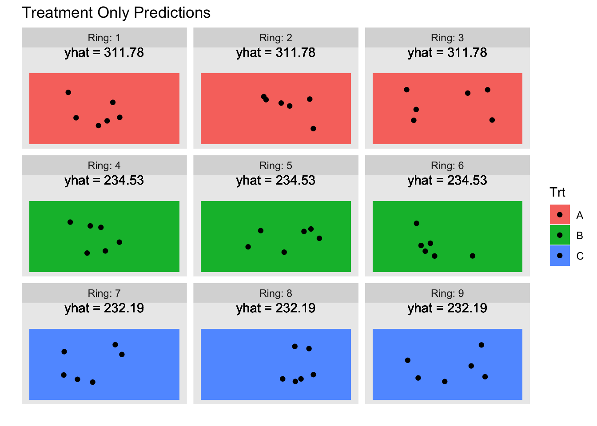
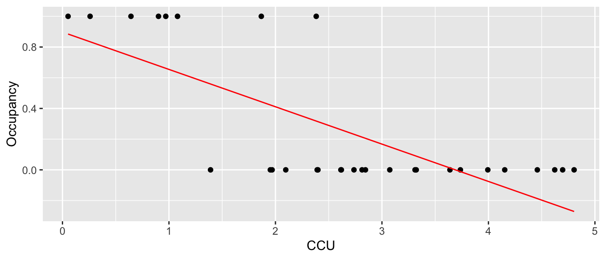
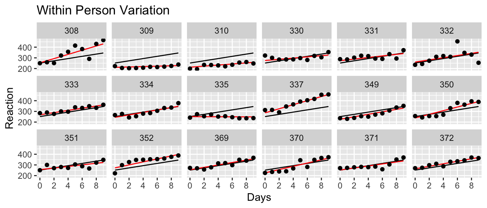
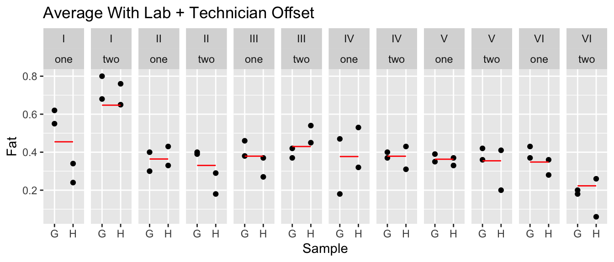
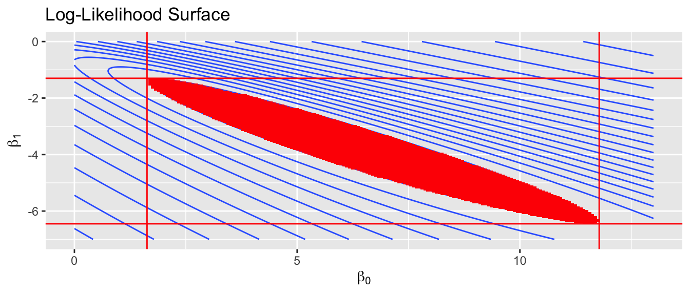
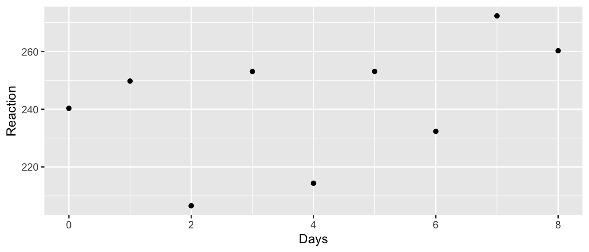
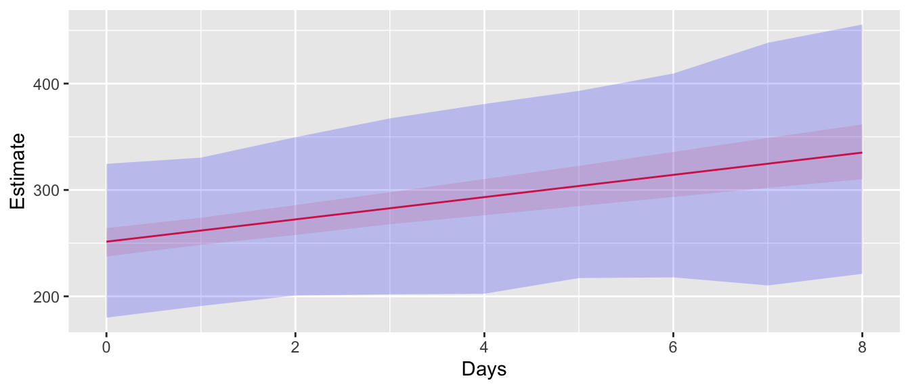
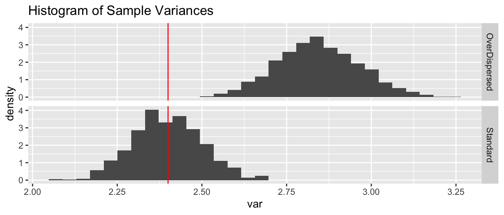
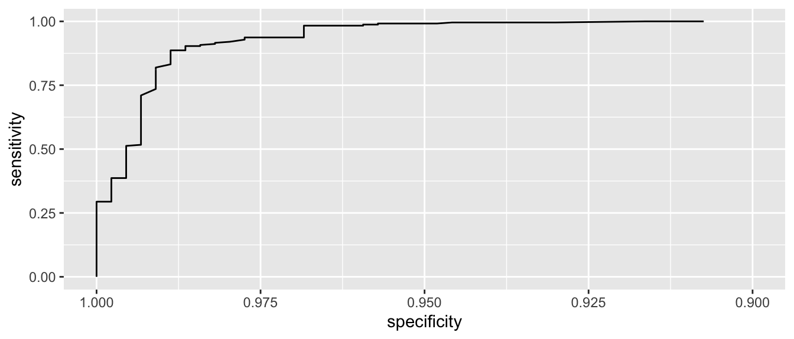
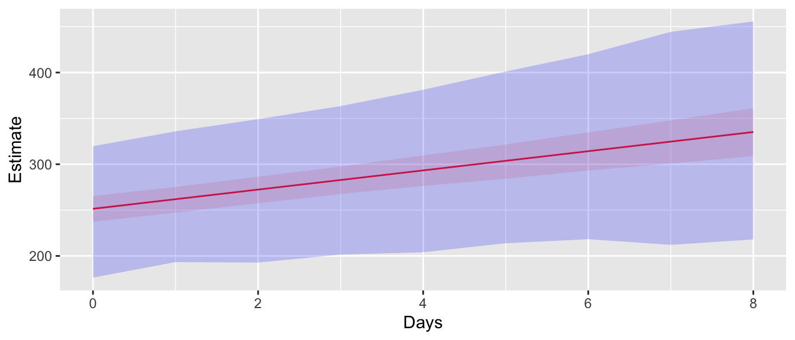

Chapter 14 Binomial Regression
library(tidyverse) # dplyr, tidyr, ggplot2, etc...
library(emmeans)
library(pROC)
library(lmerTest)The standard linear model assumes that the observed data is distributed \[\boldsymbol{y} = \boldsymbol{X\beta} + \boldsymbol{\epsilon} \;\; \textrm{ where } \epsilon_i \stackrel{iid}{\sim} N(0,\sigma^2)\] which can be re-written as \[\boldsymbol{y}\sim N\left(\boldsymbol{\mu}=\boldsymbol{X\beta},\sigma^{2}\boldsymbol{I}\right)\] and notably this assumes that the data are independent. This model has \(E\left[\boldsymbol{y}\right]=\boldsymbol{X\beta}\). This model is quite flexible and includes:
| Model | Predictor Type | Response |
|---|---|---|
| Simple Linear Regression | 1 Continuous | Continuous Normal Response |
| 1-way ANOVA | 1 Categorical | Continuous Normal Response |
| 2-way ANOVA | 2 Categorical | Continuous Normal Response |
| ANCOVA | 1 Continuous, 1 Categorical | Continuous Normal Response |
The general linear model expanded on the linear model and we allow the data points to be correlated \[\boldsymbol{y}\sim N\left(\boldsymbol{X\beta},\sigma^{2}\boldsymbol{\Omega}\right)\] where we assume that \(\boldsymbol{\Omega}\) has some known form but may include some unknown correlation parameters. This type of model includes our work with mixed models and time series data.
The study of generalized linear models removes the assumption that the error terms are normally distributed and allows the data to be distributed according to some other distribution such as Binomial, Poisson, or Exponential. These distributions are parameterized differently than the normal (instead of \(\mu\) and \(\sigma\), we might be interested in \(\lambda\) or \(p\)). However, I am still interested in how my covariates can be used to estimate my parameter of interest.
Critically, I still want to parameterize my covariates as \(\boldsymbol{X\beta}\) because we understand the how continuous and discrete covariates added and interpreted and what interactions between them mean. By keeping the \(\boldsymbol{X\beta}\) part, we continue to build on the earlier foundations.
14.1 Binomial Regression Model
To remove a layer of abstraction, we will now consider the case of binary regression. In this model, the observations (which we denote by \(w_{i}\)) are zeros and ones which correspond to some binary observation, perhaps presence/absence of an animal in a plot, or the success or failure of an viral infection. Recall that we could model this as \(W_{i}\sim Bernoulli\left(p_{i}\right)\) random variable. \[P\left(W_{i}=1\right) = p_{i}\] \[P\left(W_{i}=0\right) = \left(1-p_{i}\right)\] which I can rewrite more formally letting \(w_{i}\) be the observed value as \[P\left(W_{i}=w_{i}\right)=p_{i}^{w_{i}}\left(1-p_{i}\right)^{1-w_{i}}\] and the parameter that I wish to estimate and understand is the probability of a success \(p_{i}\) and usually I wish to know how my covariate data \(\boldsymbol{X\beta}\) informs these probabilities.
In the normal distribution case, we estimated the expected value of my response vector (\(\boldsymbol{\mu}\)) simply using \(\hat{\boldsymbol{\mu}}=\boldsymbol{X}\hat{\boldsymbol{\beta}}\) but this will not work for an estimate of \(\hat{\boldsymbol{p}}\) because there is no constraint on \(\boldsymbol{X}\hat{\boldsymbol{\beta}}\), there is nothing to prevent it from being negative or greater than 1. Because we require the probability of success to be a number between 0 and 1, I have a problem.
Example: Suppose we are interested in the abundance of mayflies in a stream. Because mayflies are sensitive to metal pollution, I might be interested in looking at the presence/absence of mayflies in a stream relative to a pollution gradient. Here the pollution gradient is measured in Cumulative Criterion Units (CCU: CCU is defined as the ratio of the measured metal concentration to the hardness adjusted chronic criterion concentration, and then summed across each metal) where larger values imply more metal pollution.
data('Mayflies', package='dsData')
head(Mayflies)## CCU Occupancy
## 1 0.05261076 1
## 2 0.25935617 1
## 3 0.64322010 1
## 4 0.90168941 1
## 5 0.97002630 1
## 6 1.08037011 1ggplot(Mayflies, aes(x=CCU, y=Occupancy)) + geom_point()
If I just fit a regular linear model to this data, we fit the following:
m <- lm( Occupancy ~ CCU, data=Mayflies )
Mayflies <- Mayflies %>% mutate(yhat = predict(m))
ggplot(Mayflies, aes(x=CCU, y=Occupancy)) +
geom_point() +
geom_line(aes(y=yhat), color='red')
which is horrible. First, we want the regression line to be related to the probability of occurrence and it is giving me a negative value. Instead, we want it to slowly tail off and give me more of an sigmoid-shaped curve. Perhaps something more like the following: 
We need a way to convert our covariate data \(\boldsymbol{y}=\boldsymbol{X\beta}\) from something that can take values from \(-\infty\) to \(+\infty\) to something that is constrained between 0 and 1 so that we can fit the model \[w_{i}\sim Bernoulli\left(\underset{\textrm{in }[0,1]}{\underbrace{g^{-1}\left(\underset{\textrm{in }\left[-\infty,\infty\right]}{\underbrace{y_{i}}}\right)}}\right)\] There are several options for the link function \(g^{-1}\left(\cdot\right)\) that are commonly used. We use the notation \(y_{i}=\boldsymbol{X}_{i,\cdot}\boldsymbol{\beta}\) is unconstrained and can be in \(\left(-\infty, +\infty\right)\) while \(p_{i}=g^{-1}\left(y_{i}\right)\) is constrained to \(\left[0,1\right]\). When convenient, we will drop the \(i\) subscript while keeping the domain restrictions.
Logit (log odds) transformation. The link function is \[g\left(p\right)=\log\left[\underset{\textrm{odds}}{\underbrace{\frac{p}{1-p}}}\right]=y\] with inverse \[g^{-1}\left(y\right)=\frac{1}{1+e^{-y}}\] and we think of \(g\left(p\right)\) as the log odds function.
Probit transformation. The link function is \(g\left(p\right)=\Phi^{-1}\left(\boldsymbol{p}\right)\) where \(\Phi\) is the standard normal cumulative distribution function and therefore \(g^{-1}\left(\boldsymbol{X}\boldsymbol{\beta}\right)=\Phi\left(\boldsymbol{X}\boldsymbol{\beta}\right)\).
Complementary log-log transformation: \(g\left(p\right)=\log\left[-\log(1-\boldsymbol{p})\right]\).
All of these functions will give a sigmoid shape with higher probability as \(y\) increases and lower probability as it decreases. The logit and probit transformations have the nice property that if \(y=0\) then \(g^{-1}\left(0\right)=\frac{1}{2}\).
Usually the difference in inferences made using these different curves is relatively small and we will usually use the logit transformation because its form lends itself to a nice interpretation of my \(\boldsymbol{\beta}\) values. In these cases, a slope parameter in our model will be interpreted as “the change in log odds for every one unit change in the predictor.”
Because we will be using the logit transformation so often, it is useful to make the following definitions: \[\textrm{logit}\left(p\right) = \log\left[\frac{p}{1-p}\right]\] \[\textrm{ilogit}\left(y\right) = \frac{1}{1+e^{-y}}\] where \(p\in\left[0,1\right]\) and \(y\in\left(-\infty,+\infty\right)\).
As in the mixed model case, there are no closed form solution for \(\hat{\boldsymbol{\beta}}\) and instead we must rely on numerical solutions to find the maximum likelihood estimators for \(\hat{\boldsymbol{\beta}}\). To do this, we must derive the likelihood function.
\[\begin{aligned} L\left(\boldsymbol{\beta}|\boldsymbol{w} \right) &= \prod_{i=1}^{n}L\left(\boldsymbol{\beta}|w_{i} \right) \\ &= \prod_{i=1}^{n} p_{i}^{wi}\left(1-p_{i}\right)^{1-w_{i}} \\ &= \prod_{i=1}^n \left(\textrm{ilogit}(X_i \beta) \right)^{w_i} \left( 1-\textrm{ilogit}(X_i \beta)\right)^{1-w_i} \end{aligned}\] and we recognize that \[p_{i}=\textrm{ilogit}\left(\boldsymbol{X\beta}\right)=1/\left(1+e^{-\boldsymbol{X\beta}}\right)\] and we substituted that into the equation. Often times it is more numerically stable to maximize the log-likelihood rather than the pure likelihood function because using logs helps prevent machine under-flow issues when the values of the likelihood is really small, but we will ignore that here and just assume that the function the performs the maximization is well designed to consider such issues.
Often we have more than one response at a particular level of \(\boldsymbol{X}\). Let \(n_{i}\) be the number of observations observed at the particular value of \(\boldsymbol{X}\), and \(y_{i}\) be the proportion of successes at that value of \(\boldsymbol{X}\). In that case, \(w_{i}\) is not a Bernoulli random variable, but rather a binomial random variable. Note that the Bernoulli distribution is the special case of the binomial distribution with \(n_{i}=1\).
# beta are the parameters
# y is the response in terms of 0,1 for this mayfly example
# X is the design matrix that we use for our covariates.
logL <- function(beta, y, X){
out <- dbinom( y, size=1, prob= faraway::ilogit(X%*%beta), log=TRUE ) %>% sum()
return(out)
}
NeglogL <- function(beta, y, X){ return( -logL(beta, y, X)) }optim( par=c(0,0), # intial bad guesses
fn = NeglogL, # we want to minimize the -logL function, maximize logL
y=Mayflies$Occupancy, # parameters to pass to the logL function
X = model.matrix( ~ 1 + CCU, data=Mayflies ) ) # ditto## $par
## [1] 5.100892 -3.050336
##
## $value
## [1] 6.324365
##
## $counts
## function gradient
## 71 NA
##
## $convergence
## [1] 0
##
## $message
## NULLIn general, we don’t want to have to specify the likelihood function by hand. Instead we will specify the model using the glm function which accepts a model formula as well as the distribution family that the data comes from.
head(Mayflies)## CCU Occupancy yhat
## 1 0.05261076 1 0.8846278
## 2 0.25935617 1 0.8343395
## 3 0.64322010 1 0.7409692
## 4 0.90168941 1 0.6780997
## 5 0.97002630 1 0.6614776
## 6 1.08037011 1 0.6346378# The following are equivalent and a "success" is if the site is
# occupied. If you were to switch it so a success is that the site
# is not occupied, the signs on all the beta coefficients would switch.
# m1 <- glm( (Occupancy == 1) ~ CCU, data=Mayflies, family=binomial ) # problem with emmeans!
m1 <- glm( cbind(Occupancy, 1-Occupancy) ~ CCU, data=Mayflies, family=binomial ) #ok!
m1 <- glm( Occupancy ~ CCU, data=Mayflies, family=binomial )For binomial response data, we need to know the number of successes and the number of failures at each level of our covariate. In this case it is quite simple because there is only one observation at each CCU level, so the number of successes is Occupancy and the number of failures is just 1-Occupancy. For binomial data, glm expect the response to be a two-column matrix where the first column is the number successes and and the second column is the number of failures. The default choice of link function for binomial data is the logit link, but the probit can be easily chosen as well using family=binomial(link=probit) in the call to glm(). If you only give a single response vector, it is assumed that the second column is to be calculated as 1-first.column.
summary(m1)##
## Call:
## glm(formula = Occupancy ~ CCU, family = binomial, data = Mayflies)
##
## Deviance Residuals:
## Min 1Q Median 3Q Max
## -1.55741 -0.31594 -0.06553 0.08653 2.13362
##
## Coefficients:
## Estimate Std. Error z value Pr(>|z|)
## (Intercept) 5.102 2.369 2.154 0.0313 *
## CCU -3.051 1.211 -2.520 0.0117 *
## ---
## Signif. codes: 0 '***' 0.001 '**' 0.01 '*' 0.05 '.' 0.1 ' ' 1
##
## (Dispersion parameter for binomial family taken to be 1)
##
## Null deviance: 34.795 on 29 degrees of freedom
## Residual deviance: 12.649 on 28 degrees of freedom
## AIC: 16.649
##
## Number of Fisher Scoring iterations: 7Notice that the summary table includes an estimate of the standard error of each \(\hat{\beta}_{j}\) and a standardized value and z-test that are calculated in the usual manner \(z_{j}=\frac{\hat{\beta}_{j}-0}{StdErr\left(\hat{\beta}_{j}\right)}\) but these only approximately follow a standard normal distribution (due to the CLT results for Maximum Likelihood Estimators). We should regard the p-values given as approximate.
The sigmoid curve shown prior was the result of the logit model and we can estimate the probability of occupancy for any value of CCU. Surprisingly, R does not have a built-in function for the logit and ilogit function, but the faraway package does include them.
# Here are two ways to calculate the phat value for CCU = 1
new.df <- data.frame(CCU=1)
faraway::ilogit( predict(m1, newdata=new.df) ) ## 1
## 0.886042predict(m1, newdata=new.df, type='response') ## 1
## 0.886042# But the predict() function won't give you a confidence interval.
# Lets get this value through emmeans() instead.
emmeans(m1, ~CCU, type='response', at=list(CCU=1))## CCU prob SE df asymp.LCL asymp.UCL
## 1 0.886 0.129 Inf 0.391 0.99
##
## Confidence level used: 0.95
## Intervals are back-transformed from the logit scale# Finally a nice graph
new.df <- data.frame( CCU=seq(0,5, by=.01) )
yhat.df <- new.df %>% mutate(fit = predict(m1, newdata=new.df, type='response') )
ggplot(Mayflies, aes(x=CCU)) +
geom_point(aes(y=Occupancy)) +
geom_line( data=yhat.df, aes(y=fit), color='red') 
Suppose that we were to give a predicted Presence/Absence class based on the \(\hat{p}\) value. Lets predict presence if the probability is greater than 0.5 and absent if the the probability is less that 0.5.
Mayflies <- Mayflies %>%
mutate(phat = predict(m1, type='response')) %>%
mutate(chat = ifelse(phat >0.5, 1, 0))
# This is often called the "confusion matrix"
table(Truth = Mayflies$Occupancy, Prediction = Mayflies$chat)## Prediction
## Truth 0 1
## 0 21 1
## 1 2 6This scheme has mis-classified 3 observations, two cases where mayflies were present but we predicted they would be absent, and one case where no mayflies were detected but we predicted we would see them.
14.2 Measures of Fit Quality
14.2.1 Deviance
In the normal linear models case, we were very interested in the Sum of Squared Error (SSE) \[SSE=\sum_{i=1}^{n}\left(w_{i}-\hat{w}_{i}\right)^{2}\] because it provided a mechanism for comparing the fit of two different models. If a model had a very small SSE, then it fit the observed data well. We used this as a basis for forming our F-test to compare nested models (some rescaling by the appropriate degrees of freedom was necessary, though).
We want an equivalent measure of goodness-of-fit for models that are non-normal, but in the normal case, I would like it to be related to my SSE statistic.
The deviance of a model with respect to some data \(\boldsymbol{y}\) is defined by \[D\left(\boldsymbol{w},\hat{\boldsymbol{\theta}}_{0}\right) = -2\left[\log L\left(\hat{\boldsymbol{\theta}}_{0}|\boldsymbol{w}\right)-\log L\left(\hat{\boldsymbol{\theta}}_{S}|\boldsymbol{w}\right)\right]\] where \(\hat{\boldsymbol{\theta}}_{0}\) are the fitted parameters of the model of interest, and \(\hat{\boldsymbol{\theta}}_{S}\) are the fitted parameters under a “saturated” model that has as many parameters as it has observations and can therefore fit the data perfectly. Thus the deviance is a measure of deviation from a perfect model and is flexible enough to handle non-normal distributions appropriately.
Notice that this definition is very similar to what is calculated during the Likelihood Ratio Test. For any two models under consideration, the LRT can be formed by looking at the difference of the deviances of the two nested models \[LRT=D\left(\boldsymbol{w},\hat{\boldsymbol{\theta}}_{simple}\right)-D\left(\boldsymbol{w},\hat{\boldsymbol{\theta}}_{complex}\right)\stackrel{\cdot}{\sim}\chi_{df_{complex}-df_{simple}}^{2}\]
m0 <- glm( Occupancy ~ 1, data=Mayflies, family=binomial )
anova(m0, m1)## Analysis of Deviance Table
##
## Model 1: Occupancy ~ 1
## Model 2: Occupancy ~ CCU
## Resid. Df Resid. Dev Df Deviance
## 1 29 34.795
## 2 28 12.649 1 22.1461 - pchisq( 22.146, df=1 )## [1] 2.526819e-06A convenient way to get R to calculate the LRT \(\chi^{2}\) p-value for you is to specify the test=LRT inside the anova function.
anova(m1, test='LRT')## Analysis of Deviance Table
##
## Model: binomial, link: logit
##
## Response: Occupancy
##
## Terms added sequentially (first to last)
##
##
## Df Deviance Resid. Df Resid. Dev Pr(>Chi)
## NULL 29 34.795
## CCU 1 22.146 28 12.649 2.527e-06 ***
## ---
## Signif. codes: 0 '***' 0.001 '**' 0.01 '*' 0.05 '.' 0.1 ' ' 1The inference of this can be confirmed by looking at the AIC values of the two models as well.
AIC(m0, m1)## df AIC
## m0 1 36.79491
## m1 2 16.6487314.2.2 Goodness of Fit
The deviance is a good way to measure if a model fits the data, but it is not the only method. Pearson’s \(X^{2}\) statistic is also applicable. This statistic takes the general form \(X^{2}=\sum_{i=1}^{n}\frac{\left(O_{i}-E_{i}\right)^{2}}{E_{i}}\) where \(O_{i}\) is the number of observations observed in category \(i\) and \(E_{i}\) is the number expected in category \(i\). In our case we need to figure out the categories we have. Since we have both the number of success and failures, we’ll have two categories per observation \(i\). \[X^{2} = \sum_{i=1}^{n}\left[\frac{\left(w_{i}-n_{i}\hat{p}_{i}\right)^{2}}{n_{i}\hat{p}_{i}}+\frac{\left(\left(n_{i}-w_{i}\right)-n_{i}\left(1-\hat{p}_{i}\right)\right)^{2}}{n_{i}\left(1-\hat{p}_{i}\right)}\right] = \sum_{i=1}^{n}\frac{\left(w_{i}-n_{i}\hat{p}_{i}\right)^{2}}{n_{i}\hat{p}_{i}\left(1-\hat{p}_{i}\right)}\] and the Pearson residual can be defined as \[r_{i}=\frac{w_{i}-n_{i}\hat{p}_{i}}{\sqrt{n_{i}\hat{p}_{i}\left(1-\hat{p}_{i}\right)}}\]
These can be found in R via the following commands
sum( residuals(m1, type='pearson')^2 )## [1] 14.92367Pearson’s \(X^{2}\) statistic is quite similar to the deviance statistic
deviance(m1)## [1] 12.6487314.3 Confidence Intervals
Confidence intervals for the regression could be constructed using normal approximations for the parameter estimates. An approximate \(100\left(1-\alpha\right)\%\) confidence interval for \(\beta_{i}\) would be \[\hat{\beta}_{i}\pm z^{1-\alpha/2}\,StdErr\left(\hat{\beta}_{i}\right)\] but we know that this is not a good approximation because the the normal approximation will not be good for small sample sizes and it isn’t clear what is “big enough”. Instead we will use an inverted LRT to develop confidence intervals for the \(\beta_{i}\) parameters.
We first consider the simplest case, where we have only an intercept and slope parameter. Below is a contour plot of the likelihood surface and the shaded region is the region of the parameter space where the parameters \(\left(\beta_{0},\beta_{1}\right)\) would not be rejected by the LRT. This region is found by finding the maximum likelihood estimators \(\hat{\beta}_{0}\) and \(\hat{\beta}_{1}\), and then finding set of \(\beta_{0},\beta_{1}\) pairs such that \[\begin{aligned} -2\left[\log L\left(\beta_{0},\beta_{1}\right)-\log L\left(\hat{\beta}_{0},\hat{\beta}_{1}\right)\right] & \le \chi_{df=1,0.95}^{2} \\ \log L\left(\beta_{0},\beta_{1}\right) &\ge \left(\frac{-1}{2}\right)\chi_{1,0.95}^{2}+\log L\left(\hat{\beta}_{0},\hat{\beta}_{1}\right) \end{aligned}\]

Looking at just the \(\beta_{0}\) axis, this translates into a confidence interval of \((1.63,\, 11.78)\). This method is commonly referred to as the “profile likelihood” interval because the interval is created by viewing the contour plot from the one axis. The physical analogy is to viewing a mountain range from afar and asking, “What parts of the mountain are higher than 8000 feet?”
This type of confidence interval is more robust than the normal approximation and should be used whenever practical. In R, the profile likelihood confidence interval for glm objects is available in the MASS library.
confint(m1) # using defaults## Waiting for profiling to be done...## 2.5 % 97.5 %
## (Intercept) 1.629512 11.781167
## CCU -6.446863 -1.304244confint(m1, level=.95, parm='CCU') # Just the slope parameter## Waiting for profiling to be done...## 2.5 % 97.5 %
## -6.446863 -1.30424414.4 Interpreting model coefficients
We first consider why we are dealing with odds \(\frac{p}{1-p}\) instead of just \(p\). They contain the same information, so the choice is somewhat arbitrary, however we’ve been using probabilities for so long that it feels unnatural to switch to odds. There are two good reasons for this, however.
The first is that the odds \(\frac{p}{1-p}\) can take on any value from \(0\) to \(\infty\) and so part of our translation of \(p\) to an unrestricted domain is already done.
The second is that it is easier to compare odds than to compare probabilities. For example, (as of this writing) I have a three month old baby who is prone to spitting up her milk.
I think the probability that she will not spit up on me today is \(p_{1}=0.10\). My wife disagrees and believes the probability is \(p_{2}=0.01\). We can look at those probabilities and recognize that we differ in our assessment by a factor of \(10\) because \(10=p_{1}/p_{2}\). If we had assessed the chance of her spitting up using odds, I would have calculated \(o_{1}=0.1/0.9=1/9\). My wife, on the other hand, would have calculated \(o_{2}=.01/.99=1/99\). The odds ratio of these is \(\left[1/9\right] / \left[1/99\right] = 99/9 =11\). This shows that she is much more certain that the event will not happen and the multiplying factor of the pair of odds is 11.
But what if we were to consider the probability that my daughter will spit up? The probabilities assigned by me versus my wife are \(p_{1}=0.9\) and \(p_{2}=0.99\). How should I assess that our probabilities differ by a factor of 10, because \(p_{1}/p_{2}=0.91\ne10\)? The odds ratio remains the same calculation, however. The odds I would give are \(o_1=.9/.1=9\) vs my wife’s odds \(o_2 = .99/.01 = 99\). The odds ratio is now \(9/99=1/11\) and gives the same information as I calculated from the where we defined a success as my daughter not spitting up.
To try to clear up the verbiage we’ll consider a few different cases:
| Probability | Odds | Verbiage |
|---|---|---|
| \(p=.95\) | \(\frac{95}{5} = \frac{19}{1} = 19\) | 19 to 1 odds for |
| \(p=.75\) | \(\frac{75}{25} = \frac{3}{1} = 3\) | 3 to 1 odds for |
| \(p=.50\) | \(\frac{50}{50} = \frac{1}{1} = 1\) | 1 to 1 odds |
| \(p=.25\) | \(\frac{25}{75} = \frac{1}{3} = 0.33\) | 3 to 1 odds against |
| \(p=.05\) | \(\frac{95}{5} = \frac{1}{19} = 0.0526\) | 19 to 1 odds against |
Given a logistic regression model with two continuous covariates, then using the logit() link function we have \[\log\left(\frac{p}{1-p}\right) = \beta_{0}+\beta_{1}x_{1}+\beta_{2}x_{2}\]
\[\frac{p}{1-p} = e^{\beta_{0}}e^{\beta_{1}x_{1}}e^{\beta_{2}x_{2}}\]
and we can interpret \(\beta_{1}\) and \(\beta_{2}\) as the increase in the log odds for every unit increase in \(x_{1}\) and \(x_{2}\). We could alternatively interpret \(\beta_{1}\) and \(\beta_{2}\) using the notion that a one unit change in \(x_{1}\) as a percent change of \(e^{\beta_{1}}\) in the odds. That is to say, \(e^{\beta_{1}}\) is the odds ratio of that change.
To investigate how to interpret these effects, we will consider an example of the rates of respiratory disease of babies in the first year based on covariates of gender and feeding method (breast milk, formula from a bottle, or a combination of the two). The data percentages of babies suffering respiratory disease are
Formula f |
Breast Milk b |
Breast Milk + Supplement s |
|
|---|---|---|---|
Males M |
\(\frac{77}{485}\) | \(\frac{47}{494}\) | \(\frac{19}{147}\) |
Females F |
\(\frac{48}{384}\) | \(\frac{31}{464}\) | \(\frac{16}{127}\) |
We can fit the saturated model (6 parameters to fit 6 different probabilities) as
data('babyfood', package='faraway')
head(babyfood)## disease nondisease sex food
## 1 77 381 Boy Bottle
## 2 19 128 Boy Suppl
## 3 47 447 Boy Breast
## 4 48 336 Girl Bottle
## 5 16 111 Girl Suppl
## 6 31 433 Girl Breastm2 <- glm( cbind(disease,nondisease) ~ sex * food, family=binomial, data=babyfood )
summary(m2)##
## Call:
## glm(formula = cbind(disease, nondisease) ~ sex * food, family = binomial,
## data = babyfood)
##
## Deviance Residuals:
## [1] 0 0 0 0 0 0
##
## Coefficients:
## Estimate Std. Error z value Pr(>|z|)
## (Intercept) -1.59899 0.12495 -12.797 < 2e-16 ***
## sexGirl -0.34692 0.19855 -1.747 0.080591 .
## foodBreast -0.65342 0.19780 -3.303 0.000955 ***
## foodSuppl -0.30860 0.27578 -1.119 0.263145
## sexGirl:foodBreast -0.03742 0.31225 -0.120 0.904603
## sexGirl:foodSuppl 0.31757 0.41397 0.767 0.443012
## ---
## Signif. codes: 0 '***' 0.001 '**' 0.01 '*' 0.05 '.' 0.1 ' ' 1
##
## (Dispersion parameter for binomial family taken to be 1)
##
## Null deviance: 2.6375e+01 on 5 degrees of freedom
## Residual deviance: 2.6401e-13 on 0 degrees of freedom
## AIC: 43.518
##
## Number of Fisher Scoring iterations: 3Notice that the residual deviance is effectively zero with zero degrees of freedom indicating we just fit the saturated model.
It is nice to look at the single term deletions to see if the interaction term could be dropped from the model.
anova(m2, test='LRT')## Analysis of Deviance Table
##
## Model: binomial, link: logit
##
## Response: cbind(disease, nondisease)
##
## Terms added sequentially (first to last)
##
##
## Df Deviance Resid. Df Resid. Dev Pr(>Chi)
## NULL 5 26.3753
## sex 1 5.4761 4 20.8992 0.01928 *
## food 2 20.1772 2 0.7219 4.155e-05 ***
## sex:food 2 0.7219 0 0.0000 0.69701
## ---
## Signif. codes: 0 '***' 0.001 '**' 0.01 '*' 0.05 '.' 0.1 ' ' 1Given this, we will look use the reduced model with out the interaction and check if we could reduce the model any more.
m1 <- glm( cbind(disease, nondisease) ~ sex + food, family=binomial, data=babyfood)
drop1(m1, test='Chi') # all single term deletions, using LRT ## Single term deletions
##
## Model:
## cbind(disease, nondisease) ~ sex + food
## Df Deviance AIC LRT Pr(>Chi)
## <none> 0.7219 40.240
## sex 1 5.6990 43.217 4.9771 0.02569 *
## food 2 20.8992 56.417 20.1772 4.155e-05 ***
## ---
## Signif. codes: 0 '***' 0.001 '**' 0.01 '*' 0.05 '.' 0.1 ' ' 1From this we see that we cannot reduce the model any more and we will interpret the coefficients of this model.
coef(m1, digits=5) # more accuracy## (Intercept) sexGirl foodBreast foodSuppl
## -1.6127038 -0.3125528 -0.6692946 -0.1725424We interpret the intercept term as the log odds that a male child fed only formula will develop a respiratory disease in their first year. With that, we could then calculate what the probability of a male formula fed baby developing respiratory disease using following \[-1.6127=\log\left(\frac{p_{M,f}}{1-p_{M,f}}\right)=\textrm{logit}\left(p_{M,f}\right)\] thus \[p_{M,f}=\textrm{ilogit}\left(-1.6127\right)=\frac{1}{1+e^{1.6127}}=0.1662\] We notice that the odds of respiratory disease disease is \[\frac{p_{M,f}}{1-p_{M,f}}=\frac{0.1662}{1-0.1662}=0.1993=e^{-1.613}\]
For a female child bottle fed only formula, their probability of developing respiratory disease is \[p_{F,f}=\frac{1}{1+e^{-(-1.6127-0.3126)}}=\frac{1}{1+e^{1.9253}}=0.1273\]
and the associated odds are \[\frac{p_{F,f}}{1-p_{F,f}}=\frac{0.1273}{1-0.1273}=0.1458=e^{-1.6127-0.3126}\] so we can interpret \(e^{-0.3126}=0.7315\) as the percent change in odds from male to female infants. That is to say, it is the odds ratio of the female infants to the males is \[e^{-0.3126}=\frac{\left(\frac{p_{F,f}}{1-p_{F,f}}\right)}{\left(\frac{p_{M,f}}{1-p_{M,f}}\right)}=\frac{0.1458}{0.1993}=0.7315\]
The interpretation here is that odds of respiratory infection for females is 73.1% than that of a similarly feed male child and I might say that being female reduces the odds of respiratory illness by \(27\%\) compared to male babies. Similarly we can calculate the change in odds ratio for the feeding types:
exp( coef(m1) )## (Intercept) sexGirl foodBreast foodSuppl
## 0.1993479 0.7315770 0.5120696 0.8415226First we notice that the intercept term can be interpreted as the odds of infection for the reference group. The each of the offset terms are the odds ratios compared to the reference group. We see that breast milk along with formula has only \(84\%\) of the odds of respiratory disease as a formula only baby, and a breast milk fed child only has \(51\%\) of the odds for respiratory disease as the formula fed baby. We can look at confidence intervals for the odds ratios by the following:
exp( confint(m1) )## Waiting for profiling to be done...## 2.5 % 97.5 %
## (Intercept) 0.1591988 0.2474333
## sexGirl 0.5536209 0.9629225
## foodBreast 0.3781905 0.6895181
## foodSuppl 0.5555372 1.2464312We should be careful in drawing conclusions here because this study was a retrospective study and the decision to breast feed a baby vs feeding with formula is inextricably tied to socio-economic status and we should investigate if the effect measured is due to feeding method or some other lurking variable tied to socio-economic status.
As usual, we don’t want to calculate all these quantities by hand and would prefer if emmeans would do all the back-transformations for us.
emmeans(m1, ~ sex+food, type='response') # probabilities for each sex/treatment## sex food prob SE df asymp.LCL asymp.UCL
## Boy Bottle 0.1662 0.0156 Inf 0.1379 0.1990
## Girl Bottle 0.1273 0.0143 Inf 0.1018 0.1580
## Boy Breast 0.0926 0.0111 Inf 0.0730 0.1168
## Girl Breast 0.0695 0.0093 Inf 0.0533 0.0901
## Boy Suppl 0.1437 0.0234 Inf 0.1036 0.1958
## Girl Suppl 0.1093 0.0194 Inf 0.0766 0.1536
##
## Confidence level used: 0.95
## Intervals are back-transformed from the logit scaleemmeans(m1, pairwise~ sex, type='response') # compare Boy / Girl## $emmeans
## sex prob SE df asymp.LCL asymp.UCL
## Boy 0.1309 0.0111 Inf 0.1105 0.154
## Girl 0.0992 0.0103 Inf 0.0808 0.121
##
## Results are averaged over the levels of: food
## Confidence level used: 0.95
## Intervals are back-transformed from the logit scale
##
## $contrasts
## contrast odds.ratio SE df z.ratio p.value
## Boy / Girl 1.37 0.193 Inf 2.216 0.0267
##
## Results are averaged over the levels of: food
## Tests are performed on the log odds ratio scaleemmeans(m1, revpairwise~ sex, type='response') # compare Girl / Boy## $emmeans
## sex prob SE df asymp.LCL asymp.UCL
## Boy 0.1309 0.0111 Inf 0.1105 0.154
## Girl 0.0992 0.0103 Inf 0.0808 0.121
##
## Results are averaged over the levels of: food
## Confidence level used: 0.95
## Intervals are back-transformed from the logit scale
##
## $contrasts
## contrast odds.ratio SE df z.ratio p.value
## Girl / Boy 0.732 0.103 Inf -2.216 0.0267
##
## Results are averaged over the levels of: food
## Tests are performed on the log odds ratio scaleemmeans(m1, pairwise ~ food, type='response') # compare Foods## $emmeans
## food prob SE df asymp.LCL asymp.UCL
## Bottle 0.1457 0.01220 Inf 0.1233 0.1712
## Breast 0.0803 0.00877 Inf 0.0647 0.0993
## Suppl 0.1255 0.01994 Inf 0.0913 0.1700
##
## Results are averaged over the levels of: sex
## Confidence level used: 0.95
## Intervals are back-transformed from the logit scale
##
## $contrasts
## contrast odds.ratio SE df z.ratio p.value
## Bottle / Breast 1.953 0.299 Inf 4.374 <.0001
## Bottle / Suppl 1.188 0.244 Inf 0.839 0.6786
## Breast / Suppl 0.609 0.132 Inf -2.296 0.0564
##
## Results are averaged over the levels of: sex
## P value adjustment: tukey method for comparing a family of 3 estimates
## Tests are performed on the log odds ratio scaleemmeans(m1, revpairwise ~ food, type='response') # compare Foods## $emmeans
## food prob SE df asymp.LCL asymp.UCL
## Bottle 0.1457 0.01220 Inf 0.1233 0.1712
## Breast 0.0803 0.00877 Inf 0.0647 0.0993
## Suppl 0.1255 0.01994 Inf 0.0913 0.1700
##
## Results are averaged over the levels of: sex
## Confidence level used: 0.95
## Intervals are back-transformed from the logit scale
##
## $contrasts
## contrast odds.ratio SE df z.ratio p.value
## Breast / Bottle 0.512 0.0783 Inf -4.374 <.0001
## Suppl / Bottle 0.842 0.1730 Inf -0.839 0.6786
## Suppl / Breast 1.643 0.3556 Inf 2.296 0.0564
##
## Results are averaged over the levels of: sex
## P value adjustment: tukey method for comparing a family of 3 estimates
## Tests are performed on the log odds ratio scale14.5 Prediction and Effective Dose Levels
To demonstrate the ideas in this section, we’ll use a toxicology study that examined insect mortality as a function of increasing concentrations of an insecticide.
data('bliss', package='faraway')We first fit the logistic regression model and plot the results
m1 <- glm( cbind(alive, dead) ~ conc, family=binomial, data=bliss)Given this, we want to develop a confidence interval for the probabilities by first calculating using the following formula. As usual, we recall that the \(y\) values live in \(\left(-\infty,\infty\right)\). \[CI_{y}:\,\,\,\hat{y}\pm z^{1-\alpha/2}\,StdErr\left(\hat{y}\right)\] We must then convert this to the \(\left[ 0,1 \right]\) space using the \(\textrm{ilogit}()\) function. \[CI_{p}=\textrm{ilogit}\left(CI_{y}\right)\]
probs <- data.frame(conc=seq(0,4,by=.1))
yhat <- predict(m1, newdata=probs, se.fit=TRUE) # list with two elements fit and se.fit
yhat <- data.frame( fit=yhat$fit, se.fit = yhat$se.fit)
probs <- cbind(probs, yhat)
head(probs)## conc fit se.fit
## 1 0.0 2.323790 0.4178878
## 2 0.1 2.207600 0.4022371
## 3 0.2 2.091411 0.3868040
## 4 0.3 1.975221 0.3716158
## 5 0.4 1.859032 0.3567036
## 6 0.5 1.742842 0.3421035probs <- probs %>% mutate(
phat = faraway::ilogit(fit),
lwr = faraway::ilogit( fit - 1.96 * se.fit ),
upr = faraway::ilogit( fit + 1.96 * se.fit ))
ggplot(bliss, aes(x=conc)) +
geom_point(aes(y=alive/(alive+dead))) +
geom_line(data=probs, aes(y=phat), color='red') +
geom_ribbon(data=probs, aes(ymin=lwr, ymax=upr), fill='red', alpha=.3) +
ggtitle('Bliss Insecticide Data') +
xlab('Concentration') + ylab('Proportion Alive')
Alternatively, we might want to do this calculation via emmeans.
emmeans::emmeans(m1, ~conc, at=list(conc=c(0:4)), type='response') ## conc prob SE df asymp.LCL asymp.UCL
## 0 0.9108 0.0339 Inf 0.8183 0.959
## 1 0.7617 0.0500 Inf 0.6507 0.846
## 2 0.5000 0.0518 Inf 0.3998 0.600
## 3 0.2383 0.0500 Inf 0.1542 0.349
## 4 0.0892 0.0339 Inf 0.0414 0.182
##
## Confidence level used: 0.95
## Intervals are back-transformed from the logit scaleThe next thing we want to do is come up with a confidence intervals for the concentration level that results in the death of \(100(p)\%\) of the insects. Often we are interested in the case of \(p=0.5\). This is often called LD50, which is the lethal dose for 50% of the population. Using the link function you can set the \(p\) value and solve for the concentration value to find
\[\hat{x}_{p}=\frac{\textrm{logit}\left(p\right)-\hat{\beta}_{0}}{\hat{\beta}_{1}}\]
which gives us a point estimate of LD(p). To get a confidence interval we need to find the standard error of \(\hat{x}_{p}\). Since this is a non-linear function of \(\hat{\beta}_{0}\) and \(\hat{\beta}_{1}\) which are correlated, we must be careful in the calculation. The actual calculation is done using the Delta Method Approximation:
\[Var\left(g\left(\hat{\boldsymbol{\theta}}\right)\right)=g'\left(\boldsymbol{\theta}\right)^{T}Var\left(\boldsymbol{\theta}\right)g'\left(\boldsymbol{\theta}\right)\]
Fortunately we don’t have to do these calculations by hand and can use the dose.p() function in the MASS package.
LD <- MASS::dose.p(m1, p=c(.25, .5, .75))
LD## Dose SE
## p = 0.25: 2.945535 0.2315932
## p = 0.50: 2.000000 0.1784367
## p = 0.75: 1.054465 0.2315932and we can use these to create approximately confidence intervals for these \(\hat{x}_{p}\) values via \[\hat{x}_{p}\pm z^{1-\alpha/2}\,StdErr\left(\hat{x}_{p}\right)\]
# why did the MASS authors make LD a vector of the
# estimated values and have an additional attribute
# that contains the standard errors? Whatever, lets
# turn this into a convential data.frame.
str(LD) ## 'glm.dose' Named num [1:3] 2.95 2 1.05
## - attr(*, "names")= chr [1:3] "p = 0.25:" "p = 0.50:" "p = 0.75:"
## - attr(*, "SE")= num [1:3, 1] 0.232 0.178 0.232
## ..- attr(*, "dimnames")=List of 2
## .. ..$ : chr [1:3] "p = 0.25:" "p = 0.50:" "p = 0.75:"
## .. ..$ : NULL
## - attr(*, "p")= num [1:3] 0.25 0.5 0.75CI <- data.frame(p = attr(LD,'p'),
Dose = as.vector(LD),
SE = attr(LD,'SE')) %>% # save the output table as LD
mutate( lwr = Dose - qnorm(.975)*SE,
upr = Dose + qnorm(.975)*SE )
CI## p Dose SE lwr upr
## 1 0.25 2.945535 0.2315932 2.4916207 3.399449
## 2 0.50 2.000000 0.1784367 1.6502705 2.349730
## 3 0.75 1.054465 0.2315932 0.6005508 1.50837914.6 Overdispersion
In the binomial distribution, the variance is a function of the probability of success and is \[Var\left(W\right)=np\left(1-p\right)\] but there are many cases where we might be interested in adding an additional variance parameter \(\phi\) to the model. A common reason for overdispersion to appear is that we might not have captured all the covariates that influence \(p\).
We can do a quick simulation to demonstrate that additional variability in \(p\) leads to addition variability overall.
N <- 1000
n <- 10
p <- .6
overdispersed_p <- p + rnorm(n, mean=0, sd=.05)
sim.data <- NULL
for( i in 1:N ){
sim.data <- sim.data %>% rbind(data.frame(
var = var( rbinom(N, size=n, prob=p)),
type = 'Standard'))
sim.data <- sim.data %>% rbind(data.frame(
var = var( rbinom(N, size=n, prob=overdispersed_p )),
type = 'OverDispersed'))
}
true.var <- p*(1-p)*n
ggplot(sim.data, aes(x=var, y=..density..)) +
geom_histogram(bins=30) +
geom_vline(xintercept = true.var, color='red') +
facet_grid(type~.) +
ggtitle('Histogram of Sample Variances') 
We see that the sample variances fall neatly about the true variance of \(2.4\) in the case where the data is distributed with a constant value for \(p\). However adding a small amount of random noise about the parameter \(p\), and we’d have more variance in the samples.
The extra uncertainty of the probability of success results in extra variability in the responses.
We can recognize when overdispersion is present by examining the deviance of our model. Because the deviance is approximately distributed \[D\left(\boldsymbol{y},\boldsymbol{\theta}\right)\stackrel{\cdot}{\sim}\chi_{df}^{2}\] where \(df\) is the residual degrees of freedom in the model. Because the \(\chi_{k}^{2}\) is the sum of \(k\) independent, squared standard normal random variables, it has an expectation \(k\) and variance \(2k\). For binomial data with group sizes (say larger than 5), this approximation isn’t too bad and we can detect overdispersion. For binary responses, the approximation is quite poor and we cannot detect overdispersion.
The simplest approach for modeling overdispersion is to introduce an addition dispersion parameter \(\sigma^{2}\). This dispersion parameter may be estimated using
\[\hat{\sigma}^{2}=\frac{X^{2}}{n-p}.\]
With the addition of the overdispersion parameter to the model, the differences between a simple and complex model is no longer distributed \(\chi^{2}\) and we must use the following approximate F-statistic
\[F=\frac{\left(D_{simple}-D_{complex}\right)/\left(df_{small}-df_{large}\right)}{\hat{\sigma}^{2}}\]
Using the F-test when the the overdispersion parameter is 1 is a less powerful test than the \(\chi^{2}\) test, so we’ll only use the F-test when the overdispersion parameter must be estimated.
Example: We consider an experiment where at five different stream locations, four boxes of trout eggs were buried and retrieved at four different times after the original placement. The number of surviving eggs was recorded and the eggs disposed of.
data(troutegg, package='faraway')
troutegg <- troutegg %>%
mutate( perish = total - survive) %>%
dplyr::select(location, period, survive, perish, total) %>%
arrange(location, period)
troutegg %>% arrange(location, period)## location period survive perish total
## 1 1 4 89 5 94
## 2 1 7 94 4 98
## 3 1 8 77 9 86
## 4 1 11 141 14 155
## 5 2 4 106 2 108
## 6 2 7 91 15 106
## 7 2 8 87 9 96
## 8 2 11 104 18 122
## 9 3 4 119 4 123
## 10 3 7 100 30 130
## 11 3 8 88 31 119
## 12 3 11 91 34 125
## 13 4 4 104 0 104
## 14 4 7 80 17 97
## 15 4 8 67 32 99
## 16 4 11 111 21 132
## 17 5 4 49 44 93
## 18 5 7 11 102 113
## 19 5 8 18 70 88
## 20 5 11 0 138 138We can first visualize the data
ggplot(troutegg, aes(x=period, y=survive/total, color=location)) +
geom_point(aes(size=total)) +
geom_line(aes(x=as.integer(period)))
We can fit the logistic regression model (noting that the model with the interaction of location and period would be saturated):
m <- glm(cbind(survive,perish) ~ location * period, family=binomial, data=troutegg)
summary(m)##
## Call:
## glm(formula = cbind(survive, perish) ~ location * period, family = binomial,
## data = troutegg)
##
## Deviance Residuals:
## [1] 0 0 0 0 0 0 0 0 0 0 0 0 0 0 0 0 0 0 0 0
##
## Coefficients:
## Estimate Std. Error z value Pr(>|z|)
## (Intercept) 2.8792 0.4596 6.265 3.74e-10 ***
## location2 1.0911 0.8489 1.285 0.19870
## location3 0.5136 0.6853 0.749 0.45356
## location4 24.4707 51676.2179 0.000 0.99962
## location5 -2.7716 0.5044 -5.495 3.90e-08 ***
## period7 0.2778 0.6869 0.404 0.68591
## period8 -0.7326 0.5791 -1.265 0.20582
## period11 -0.5695 0.5383 -1.058 0.29007
## location2:period7 -2.4453 1.0291 -2.376 0.01749 *
## location3:period7 -2.4667 0.8796 -2.804 0.00504 **
## location4:period7 -26.0789 51676.2179 -0.001 0.99960
## location5:period7 -2.6125 0.7847 -3.329 0.00087 ***
## location2:period8 -0.9690 0.9836 -0.985 0.32453
## location3:period8 -1.6169 0.7983 -2.025 0.04284 *
## location4:period8 -25.8783 51676.2179 -0.001 0.99960
## location5:period8 -0.7331 0.6696 -1.095 0.27354
## location2:period11 -1.6468 0.9297 -1.771 0.07651 .
## location3:period11 -1.8388 0.7672 -2.397 0.01654 *
## location4:period11 -25.1154 51676.2179 0.000 0.99961
## location5:period11 -27.1679 51597.7368 -0.001 0.99958
## ---
## Signif. codes: 0 '***' 0.001 '**' 0.01 '*' 0.05 '.' 0.1 ' ' 1
##
## (Dispersion parameter for binomial family taken to be 1)
##
## Null deviance: 1.0215e+03 on 19 degrees of freedom
## Residual deviance: 5.5198e-10 on 0 degrees of freedom
## AIC: 116.53
##
## Number of Fisher Scoring iterations: 22The residual deviance seems a little large. With \(12\) residual degrees of freedom, the deviance should be near \(12\). We can confirm that the deviance is quite large via:
1 - pchisq( 64.5, df=12 )## [1] 3.372415e-09We therefore estimate the overdispersion parameter
sigma2 <- sum( residuals(m, type='pearson') ^2 ) / 12
sigma2## [1] 2.29949e-11and note that this is quite a bit larger than \(1\), which is what it should be in the non-overdispersed setting. Using this we can now test the significance of the effects of location and period.
drop1(m, scale=sigma2, test='F')## Warning in drop1.glm(m, scale = sigma2, test = "F"): F test assumes
## 'quasibinomial' family## Warning in pf(q = q, df1 = df1, ...): NaNs produced## Single term deletions
##
## Model:
## cbind(survive, perish) ~ location * period
##
## scale: 2.29949e-11
##
## Df Deviance AIC F value Pr(>F)
## <none> 0.000 1.1700e+02
## location:period 12 64.495 2.8048e+12 0and conclude that both location and period are significant predictors of trout egg survivorship.
We could have avoided having to calculate \(\hat{\sigma}^{2}\) by hand by simply using the quasibinomial family instead of the binomial.
m2 <- glm(cbind(survive,perish) ~ location + period,
family=quasibinomial, data=troutegg)
summary(m2)##
## Call:
## glm(formula = cbind(survive, perish) ~ location + period, family = quasibinomial,
## data = troutegg)
##
## Deviance Residuals:
## Min 1Q Median 3Q Max
## -4.8305 -0.3650 -0.0303 0.6191 3.2434
##
## Coefficients:
## Estimate Std. Error t value Pr(>|t|)
## (Intercept) 4.6358 0.6495 7.138 1.18e-05 ***
## location2 -0.4168 0.5682 -0.734 0.477315
## location3 -1.2421 0.5066 -2.452 0.030501 *
## location4 -0.9509 0.5281 -1.800 0.096970 .
## location5 -4.6138 0.5777 -7.987 3.82e-06 ***
## period7 -2.1702 0.5504 -3.943 0.001953 **
## period8 -2.3256 0.5609 -4.146 0.001356 **
## period11 -2.4500 0.5405 -4.533 0.000686 ***
## ---
## Signif. codes: 0 '***' 0.001 '**' 0.01 '*' 0.05 '.' 0.1 ' ' 1
##
## (Dispersion parameter for quasibinomial family taken to be 5.330358)
##
## Null deviance: 1021.469 on 19 degrees of freedom
## Residual deviance: 64.495 on 12 degrees of freedom
## AIC: NA
##
## Number of Fisher Scoring iterations: 5drop1(m2, test='F')## Single term deletions
##
## Model:
## cbind(survive, perish) ~ location + period
## Df Deviance F value Pr(>F)
## <none> 64.50
## location 4 913.56 39.494 8.142e-07 ***
## period 3 228.57 10.176 0.001288 **
## ---
## Signif. codes: 0 '***' 0.001 '**' 0.01 '*' 0.05 '.' 0.1 ' ' 1# anova(m2, test='F')While each of the time periods is different than the first, it looks like periods 7,8, and 11 aren’t different from each other. As usual, we need to turn to the emmeans package for looking at the pairwise differences between the periods.
emmeans(m2, pairwise~period, type='response') ## $emmeans
## period prob SE df asymp.LCL asymp.UCL
## 4 0.960 0.0177 Inf 0.907 0.984
## 7 0.735 0.0567 Inf 0.611 0.831
## 8 0.704 0.0618 Inf 0.571 0.809
## 11 0.677 0.0549 Inf 0.562 0.774
##
## Results are averaged over the levels of: location
## Confidence level used: 0.95
## Intervals are back-transformed from the logit scale
##
## $contrasts
## contrast odds.ratio SE df z.ratio p.value
## 4 / 7 8.76 4.821 Inf 3.943 0.0005
## 4 / 8 10.23 5.740 Inf 4.146 0.0002
## 4 / 11 11.59 6.263 Inf 4.533 <.0001
## 7 / 8 1.17 0.475 Inf 0.383 0.9810
## 7 / 11 1.32 0.501 Inf 0.739 0.8814
## 8 / 11 1.13 0.431 Inf 0.327 0.9880
##
## Results are averaged over the levels of: location
## P value adjustment: tukey method for comparing a family of 4 estimates
## Tests are performed on the log odds ratio scaleemmeans(m2, ~period, type='response') %>% multcomp::cld(Letters=letters)## period prob SE df asymp.LCL asymp.UCL .group
## 11 0.677 0.0549 Inf 0.562 0.774 a
## 8 0.704 0.0618 Inf 0.571 0.809 a
## 7 0.735 0.0567 Inf 0.611 0.831 a
## 4 0.960 0.0177 Inf 0.907 0.984 b
##
## Results are averaged over the levels of: location
## Confidence level used: 0.95
## Intervals are back-transformed from the logit scale
## P value adjustment: tukey method for comparing a family of 4 estimates
## Tests are performed on the log odds ratio scale
## significance level used: alpha = 0.05Looking at this experiment, it looks like there is an interaction between location and period. If we fit a model with the interaction, it is the saturated model (20 covariates for 20 observations)
m3 <- glm( cbind(survive, perish) ~ period * location, family=binomial, data=troutegg)
summary(m3)##
## Call:
## glm(formula = cbind(survive, perish) ~ period * location, family = binomial,
## data = troutegg)
##
## Deviance Residuals:
## [1] 0 0 0 0 0 0 0 0 0 0 0 0 0 0 0 0 0 0 0 0
##
## Coefficients:
## Estimate Std. Error z value Pr(>|z|)
## (Intercept) 2.8792 0.4596 6.265 3.74e-10 ***
## period7 0.2778 0.6869 0.404 0.68591
## period8 -0.7326 0.5791 -1.265 0.20582
## period11 -0.5695 0.5383 -1.058 0.29007
## location2 1.0911 0.8489 1.285 0.19870
## location3 0.5136 0.6853 0.749 0.45356
## location4 24.4707 51676.2184 0.000 0.99962
## location5 -2.7716 0.5044 -5.495 3.90e-08 ***
## period7:location2 -2.4453 1.0291 -2.376 0.01749 *
## period8:location2 -0.9690 0.9836 -0.985 0.32453
## period11:location2 -1.6468 0.9297 -1.771 0.07651 .
## period7:location3 -2.4667 0.8796 -2.804 0.00504 **
## period8:location3 -1.6169 0.7983 -2.025 0.04284 *
## period11:location3 -1.8388 0.7672 -2.397 0.01654 *
## period7:location4 -26.0789 51676.2184 -0.001 0.99960
## period8:location4 -25.8783 51676.2184 -0.001 0.99960
## period11:location4 -25.1154 51676.2184 0.000 0.99961
## period7:location5 -2.6125 0.7847 -3.329 0.00087 ***
## period8:location5 -0.7331 0.6696 -1.095 0.27354
## period11:location5 -27.1679 51597.7368 -0.001 0.99958
## ---
## Signif. codes: 0 '***' 0.001 '**' 0.01 '*' 0.05 '.' 0.1 ' ' 1
##
## (Dispersion parameter for binomial family taken to be 1)
##
## Null deviance: 1.0215e+03 on 19 degrees of freedom
## Residual deviance: 5.5196e-10 on 0 degrees of freedom
## AIC: 116.53
##
## Number of Fisher Scoring iterations: 22Notice that we’ve fit the saturated model and we’ve resolved the overdispersion problem because of that.
As usual, we can now look at the effect of period at each of the locations.
emmeans(m3, ~ period | location, type='response') %>% multcomp::cld()## location = 1:
## period prob SE df asymp.LCL asymp.UCL .group
## 8 0.8953488 0.03300798 Inf 0.8109406 0.9446443 1
## 11 0.9096774 0.02302375 Inf 0.8532710 0.9457777 1
## 4 0.9468085 0.02314665 Inf 0.8785095 0.9776867 1
## 7 0.9591837 0.01998733 Inf 0.8962639 0.9845962 1
##
## location = 2:
## period prob SE df asymp.LCL asymp.UCL .group
## 11 0.8524590 0.03210799 Inf 0.7779341 0.9050269 1
## 7 0.8584906 0.03385381 Inf 0.7784456 0.9128537 1
## 8 0.9062500 0.02974911 Inf 0.8295443 0.9504977 12
## 4 0.9814815 0.01297276 Inf 0.9289964 0.9953638 2
##
## location = 3:
## period prob SE df asymp.LCL asymp.UCL .group
## 11 0.7280000 0.03980111 Inf 0.6434907 0.7987421 1
## 8 0.7394958 0.04023479 Inf 0.6533948 0.8104142 1
## 7 0.7692308 0.03695265 Inf 0.6891126 0.8336850 1
## 4 0.9674797 0.01599358 Inf 0.9165610 0.9877408 2
##
## location = 4:
## period prob SE df asymp.LCL asymp.UCL .group
## 8 0.6767677 0.04700674 Inf 0.5787856 0.7613551 1
## 7 0.8247423 0.03860215 Inf 0.7360186 0.8881766 12
## 11 0.8409091 0.03183558 Inf 0.7682755 0.8939194 2
## 4 1.0000000 0.00000007 Inf 0.0000000 1.0000000 12
##
## location = 5:
## period prob SE df asymp.LCL asymp.UCL .group
## 11 0.0000000 0.00000005 Inf 0.0000000 1.0000000 12
## 7 0.0973451 0.02788552 Inf 0.0547290 0.1672733 1
## 8 0.2045455 0.04299929 Inf 0.1328383 0.3015023 1
## 4 0.5268817 0.05177260 Inf 0.4256954 0.6259069 2
##
## Confidence level used: 0.95
## Intervals are back-transformed from the logit scale
## P value adjustment: tukey method for comparing a family of 4 estimates
## Tests are performed on the log odds ratio scale
## significance level used: alpha = 0.05Notice that there isn’t a huge difference in period for locations 1-4, but in location 5 things are very different.
We might consider that location really ought to be a random effect. Fortunately lme4 supports the family option, although it will not accept quasi families, you either fit a random effect or fit a quasibinomial. In either case, fitting the full interaction model with period*location doesn’t work because we have a saturated model
# addititive model
m3 <- glmer(cbind(survive,perish) ~ period + (1|location),
family=binomial, data=troutegg)
summary(m3)## Generalized linear mixed model fit by maximum likelihood (Laplace
## Approximation) [glmerMod]
## Family: binomial ( logit )
## Formula: cbind(survive, perish) ~ period + (1 | location)
## Data: troutegg
##
## AIC BIC logLik deviance df.resid
## 180.3 185.3 -85.2 170.3 15
##
## Scaled residuals:
## Min 1Q Median 3Q Max
## -4.2274 -0.3592 0.0027 0.6531 3.5841
##
## Random effects:
## Groups Name Variance Std.Dev.
## location (Intercept) 2.682 1.638
## Number of obs: 20, groups: location, 5
##
## Fixed effects:
## Estimate Std. Error z value Pr(>|z|)
## (Intercept) 3.1799 0.7594 4.187 2.82e-05 ***
## period7 -2.1545 0.2368 -9.097 < 2e-16 ***
## period8 -2.3085 0.2414 -9.564 < 2e-16 ***
## period11 -2.4324 0.2325 -10.460 < 2e-16 ***
## ---
## Signif. codes: 0 '***' 0.001 '**' 0.01 '*' 0.05 '.' 0.1 ' ' 1
##
## Correlation of Fixed Effects:
## (Intr) perid7 perid8
## period7 -0.224
## period8 -0.225 0.732
## period11 -0.234 0.758 0.761emmeans(m3, ~period, type='response') %>% multcomp::cld(Letters=letters)## period prob SE df asymp.LCL asymp.UCL .group
## 11 0.679 0.1615 Inf 0.331 0.900 a
## 8 0.705 0.1546 Inf 0.358 0.911 a
## 7 0.736 0.1444 Inf 0.394 0.923 a
## 4 0.960 0.0291 Inf 0.844 0.991 b
##
## Confidence level used: 0.95
## Intervals are back-transformed from the logit scale
## P value adjustment: tukey method for comparing a family of 4 estimates
## Tests are performed on the log odds ratio scale
## significance level used: alpha = 0.05# Interaction model
m4 <- glmer(cbind(survive,perish) ~ period + (1 + period|location),
family=binomial, data=troutegg)## Warning in checkConv(attr(opt, "derivs"), opt$par, ctrl = control$checkConv, :
## Model failed to converge with max|grad| = 0.0184817 (tol = 0.002, component 1)#summary(m4)
#emmeans(m4, ~period, type='response') %>% multcomp::cld(Letters=letters)Unfortunately, we aren’t able to fit the saturated model using random effects because the numerical optimization function for finding MLE estimates failed to converge.
14.7 ROC Curves
The dataset faraway::wbca comes from a study of breast cancer in Wisconsin. There are 681 cases of potentially cancerous tumors of which 238 are actually malignant (ie cancerous). Determining whether a tumor is really malignant is traditionally determined by an invasive surgical procedure. The purpose of this study was to determine whether a new procedure called ‘fine needle aspiration’, which draws only a small sample of tissue, could be effective in determining tumor status.
data('wbca', package='faraway')
# clean up the data
wbca <- wbca %>%
mutate(Class = ifelse(Class==0, 'malignant', 'benign')) %>%
dplyr::select(Class, BNucl, UShap, USize)
# Fit the model where Malignant is considered a success
# model <- glm( I(Class=='malignant') ~ ., data=wbca, family='binomial' ) # emmeans hates this version
model <- wbca %>% mutate( Class = (Class == 'malignant') ) %>% # Clear what is success
glm( Class ~., data=., family='binomial' ) # and emmeans still happy
# Get the response values
# type='response' gives phat values which live in [0,1]
# type='link' gives the Xbeta values whice live in (-infinity, infinity)
wbca <- wbca %>%
mutate(phat = predict(model, type='response'),
yhat = ifelse(phat > .5, 'malignant', 'benign'))
# Calculate the confusion matrix
table( Truth=wbca$Class, Predicted=wbca$yhat )## Predicted
## Truth benign malignant
## benign 432 11
## malignant 15 223As usual we can calculate the summary tables…
summary(model)##
## Call:
## glm(formula = Class ~ ., family = "binomial", data = .)
##
## Deviance Residuals:
## Min 1Q Median 3Q Max
## -3.8890 -0.1409 -0.1409 0.0287 2.2284
##
## Coefficients:
## Estimate Std. Error z value Pr(>|z|)
## (Intercept) -6.35433 0.54076 -11.751 < 2e-16 ***
## BNucl 0.55297 0.08041 6.877 6.13e-12 ***
## UShap 0.62583 0.17506 3.575 0.000350 ***
## USize 0.56793 0.15910 3.570 0.000358 ***
## ---
## Signif. codes: 0 '***' 0.001 '**' 0.01 '*' 0.05 '.' 0.1 ' ' 1
##
## (Dispersion parameter for binomial family taken to be 1)
##
## Null deviance: 881.39 on 680 degrees of freedom
## Residual deviance: 148.43 on 677 degrees of freedom
## AIC: 156.43
##
## Number of Fisher Scoring iterations: 7From this table, we see that for a breast tumor, the larger values of BNucl, UShap, and USize imply a greater probability of it being malignant. So for a tumor with
## BNucl UShap USize
## 1 2 1 2We would calculate \[\begin{aligned} X \hat{\beta} &= \hat{\beta}_0 + 2 \cdot \hat{\beta}_1 + 1 \cdot \hat{\beta}_2 + 2 \cdot \hat{\beta}_3 \\ &= -6.35 + 2*(0.553) + 1*(0.626) + 2*(0.568) \\ &= -3.482 \end{aligned}\]
and therefore \[\hat{p} = \frac{1}{1+e^{-X\hat{\beta}}} = \frac{1}{1+e^{3.482}} = 0.0297\]
newdata = data.frame( BNucl=2, UShap=1, USize=2 )
predict(model, newdata=newdata)## 1
## -3.486719predict(model, newdata=newdata, type='response')## 1
## 0.0296925So for a tumor with these covariates, we would classify it as most likely to be benign.
In this medical scenario where we have to decide how to classify if a tumor is malignant of benign, we shouldn’t treat the misclassification errors as being the same. If we incorrectly identify a tumor as malignant when it is not, that will cause a patient to undergo a somewhat invasive surgury to remove the tumor. However if we incorrectly identify a tumor as being benign, then the cancerous tumor will likely grow and eventually kill the patient. While the first error is regretable, the second is far worse.
Given that reasoning, perhaps we shouldn’t use the rule: If \(\hat{p} >= 0.5\) classify as malignant. Instead perhaps we should use \(\hat{p} >= 0.3\) or \(\hat{p} >= 0.05\).
Whatever decision rule we make, we should consider how many of each type of error we make. Consider the following confusion matrix:
| Predict Negative | Predict Positive | Total | |
|---|---|---|---|
| Negative | True Neg (TN) | False Pos (FP) | \(N\) |
| Positive | False Neg (FN) | True Pos (TP) | \(P\) |
| Total | \(N^*\) | \(P^*\) |
where \(P\) is the number of positive cases, \(N\) is the number of negative cases, \(P^*\) is the number of observations predicted to be positive, and \(N^*\) is the number predicted to be negative.
| Quantity | Formula | Synonyms |
|---|---|---|
| False Positive Rate | \(FP/N\) | Type I Error; 1-Specificity |
| True Positive Rate | \(TP/P\) | Power; Sensitivity; Recall |
| Pos. Pred. Value | \(TP/P^*\) | Precision |
We can think of the True Positive Rate as the probability that a Positive case will be correctly classified as a positive. Similarly a False Positive Rate is the probability that a Negative case will be incorrectly classified as a positive.
I wish to examine the relationship between the False Positive Rate and the True Positive Rate for any decision rule. So what we could do is select a sequence of decision rules and for each calculate the (FPR, TPR) pair, and then make a plot where we play connect the dots with the (FPR, TPR) pairs.
Of course we don’t want to have to do this by hand, so we’ll use the package pROC to do it for us.
# Calculate the ROC information using pROC::roc()
myROC <- roc( wbca$Class, wbca$phat )## Setting levels: control = benign, case = malignant## Setting direction: controls < cases# make a nice plot using ggplot2 and pROC::ggroc()
ggroc( myROC ) 
This looks pretty good and in an ideal classifier that makes prefect predictions, this would be a perfect right angle at the bend.
Lets zoom in a little on the high specificity values (i.e. low false positive rates)
ggroc( myROC ) + xlim(1, .9)
We see that if we want to correctly identify about 99% of maligant tumors, we will have a false positive rate of about 1-0.95 = 0.05. So about 5% of benign tumors would be incorrectly classified as malignant.
It is a little challenging to read the graph to see what the Sensitivity is for a particular value of Specificity. To do this we’ll use another function because the authors would prefer you to also estimate the confidence intervals for the quantity. This is a case where bootstrap confidence intervals are quite effective.
ci(myROC, of='sp', sensitivities=.99)## 95% CI (2000 stratified bootstrap replicates):
## se sp.low sp.median sp.high
## 0.99 0.9187 0.9571 0.9797ci(myROC, of='se', specificities=.975)## 95% CI (2000 stratified bootstrap replicates):
## sp se.low se.median se.high
## 0.975 0.8827 0.937 0.9958One measure of how far we are from the perfect predictor is the area under the curve. The perfect model would have an area under the curve of 1. For this model the area under the curve is:
auc(myROC) ## Area under the curve: 0.9929ci(myROC, of='auc')## 95% CI: 0.9878-0.9981 (DeLong)ci(myROC, of='auc', method='bootstrap')## 95% CI: 0.9872-0.9973 (2000 stratified bootstrap replicates)which seems pretty good and Area Under the Curve (AUC) is often used as a way of comparing the quality of binary classifiers.
14.8 Exercises
- The dataset
faraway::wbcacomes from a study of breast cancer in Wisconsin. There are 681 cases of potentially cancerous tumors of which 238 are actually malignant (i.e. cancerous). Determining whether a tumor is really malignant is traditionally determined by an invasive surgical procedure. The purpose of this study was to determine whether a new procedure called ‘fine needle aspiration’, which draws only a small sample of tissue, could be effective in determining tumor status.Fit a binomial regression with
Classas the response variable and the other nine variables as predictors (for consistency among students, define a success as the tumor being benign and remember thatglmwants the response to be a matrix where the first column is the number of successes). Report the residual deviance and associated degrees of freedom. Can this information be used to determine if this model fits the data?Use AIC as the criterion to determine the best subset of variables using the step function.
Use the reduced model to give the estimated probability that a tumor with associated predictor variables
newdata <- data.frame( Adhes=1, BNucl=1, Chrom=3, Epith=2, Mitos=1, NNucl=1, Thick=4, UShap=1, USize=1)is benign and give a confidence interval for your estimate.
Suppose that a cancer is classified as benign if \(\hat{p}>0.5\) and malignant if \(\hat{p}\le0.5\). Compute the number of errors of both types that will be made if this method is applied to the current data with the reduced model. Hint: save the \(\hat{p}\) as a column in the wbca data frame and use that to create a new column
Est_Classwhich is the estimated class (making sure it is the same encoding scheme as Class). Then use dplyr functions to create a table of how many rows fall into each of the four Class/Est_Class combinations.Suppose we changed the cutoff to \(0.9\). Compute the number of errors of each type in this case. Discuss the ethical issues in determining the cutoff.
- Aflatoxin B1 was fed to lab animals at various doses and the number responding with liver cancer recorded and is available in the dataset
faraway::aflatoxin.- Build a model to predict the occurrence of liver cancer. Consider a square-root transformation to the dose level.
- Compute the ED50 level (effective dose level… same as LD50 but isn’t confined to strictly lethal effects) and an approximate \(95\%\) confidence interval.
- The dataset
faraway::pimais data from a study of adult female Pima Indians living near Phoenix was done and resulted \(n=752\) observations after the cases of missing data (obnoxiously coded as 0) were removed. Testing positive for diabetes was the success (test) and the predictor variables we will use are:pregnant,glucose, andbmi.Remove the observations that have missing data (coded as a zero) for either
glucoseorbmi. The researcher’s choice of using 0 to represent missing data is a bad idea because 0 is a valid value for the number of pregnancies, so assume a zero in thepregnantcovariate is a true value. Thedplyrfunctionfiltercould be used here.Fit the logistic regression model for
testwith using the main effects ofglucose,bmi, andpregnant.Produce a graphic that displays the relationship between the variables. Notice I’ve done the part (a) for you and the assume that your model produced in part (b) is named
m. I also split up the pregnancy and bmi values into some logical grouping for the visualization. If you’ve never used thecutfunction, go look it up because it is extremely handy.pima <- pima %>% filter( bmi != 0, glucose != 0) pima <- pima %>% mutate( phat=ilogit(predict(m)), pregnant.grp = cut(pregnant, c(0,1,3,6,100), right = FALSE, labels = c('0','1:2','3:5','6+')), bmi.grp = cut(bmi, c(0,18,25,30,100), labels=c('Underweight','Normal','Overweight','Obese'))) ggplot(pima, aes(y=test, x=glucose)) + geom_point() + geom_line(aes(y=phat), color='red') + facet_grid(bmi.grp ~ pregnant.grp)Discuss the quality of your predictions based on the graphic above and modify your model accordingly.
Give the probability of testing positive for diabetes for a Pima woman who had had no pregnancies, had
bmi=28and a glucose level of110.Give the odds that the same woman would test positive for diabetes.
How do her odds change to if she were to have a child? That is to say, what is the odds ratio for that change?